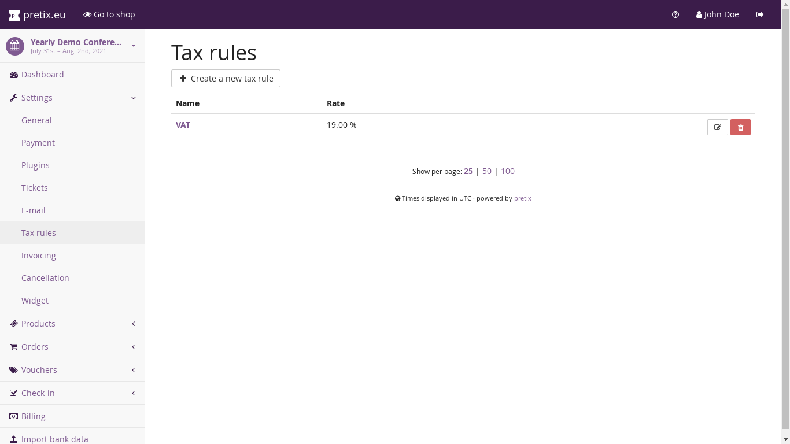
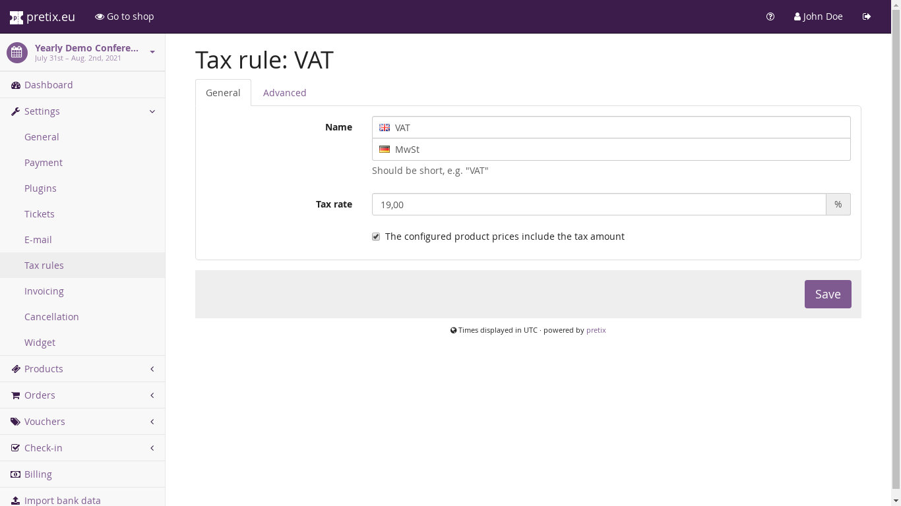

Configuring taxes¶
In most countries, you will be required to pay some form of sales tax for your event tickets. If you don’t know about the exact rules, you should consult a professional tax consultant right now.
To implement those taxes in eventyay, you can create one or multiple “tax rules”. A tax rule specifies when and at what rate should be calculated on a product price. Taxes will then be correctly displayed in the product list, order details and on invoices.
At the time of this writing, every product can be assigned exactly one tax rule. To view and change the tax rules of your event, go to the respective section in your event’s settings:
{kind=link}
On this page, you can create, edit and delete your tax rules. Clicking on the name of a tax rule will take you to its detailed settings:
{kind=link}
Here, you can tune the following parameters:
- Name
What is the (short) name of this tax? This is probably “VAT” in English and should be very short as it will be displayed in lots of places.
- Rate
This is the tax rate in percent.
- The configured product prices include the tax amount
If this setting is enabled (the default), then a product configured to a price of 10.00 EUR will, at a tax rate of 19.00 %, be interpreted as a product with a total gross price of 10.00 EUR including 1.60 EUR taxes, leading to a net price of 8.40 EUR. If you disable this setting, the price will be interpreted as a net price of 10.00 EUR, leading to a total price to pay of 11.90 EUR.
- Use EU reverse charge taxation rules
This enables reverse charge taxation (see section below).
- Merchant country
This is probably your country of residence, but in some cases it could also be the country your event is located in. This is the place of taxation in the sense of EU reverse charge rules (see section below).
EU reverse charge¶
Warning
Everything contained in this section is not legal advice. Please consult a tax consultant before making decisions. We are not responsible for the correct handling of taxes in your ticket shop.
“Reverse charge” is a rule in European VAT legislation that specifies how taxes are paid if you provide goods to a buyer in a different European country than you reside in yourself. If the buyer is a VAT-paying business in their country, you charge them only the net price without taxes and state that the buyer is responsible for paying the correct taxes themselves.
Warning
We firmly believe that reverse charge rules are not applicable for most events handled with eventyay and therefore strongly recommend not to enable this feature if you do not have a specific reason to do so. The reasoning behind this is that according to article 52 of the VAT directive (page 17), the place of supply is always the location of your event and therefore the tax rate of the event country always has to be paid regardless of the location of the visitor.
If you enable the reverse charge feature and specify your merchant country, then the following process will be performed during order creation:
The user will first be presented with the “normal” prices (net or gross, as configured).
The user adds a product to their cart. The cart will at this point always show gross prices with taxes.
In the next step, the user can enter an invoice address. Tax will be removed from the price if one of the following statements is true:
The invoice address is in a non-EU country.
The invoice address is a business address in an EU-country different from the merchant country and has a valid VAT ID.
In the second case, a reverse charge note will be added to the invoice.
VAT IDs are validated against the EUs validation web service. Should that service be unavailable, the user needs to pay VAT tax and reclaim the taxes at a later point in time with their government.
If you and the buyer are residing in EU countries that use different currencies, the invoice will show the total and VAT amount also in the local currency of the buyer, if the system was able to obtain a conversion rate from the European Central Bank’s webservice within the last 7 days.
For existing orders, a change of the invoice address will not result in a change of taxes automatically. You can trigger this manually in the backend by going to the order’s detail view. There, first click the “Check” button next to the VAT ID. Then, go to “Change products” and select the option “Recalculate taxes” at the end of the page.
Note
In the invoicing settings, you should turn the setting “Ask for VAT ID” on for this to work.
Note
During back-and-forth modification of taxation status, unfortunately there can be rounding errors of usually up to one cent from the intended price. This is unavoidable due to the flexible nature in which prices are being calculated.
Custom tax rules¶
If you have very special requirements for the conditions in which VAT will or will not be charged, you can use the “Custom tax rules” section instead of the options listed above. Here, you can create a set of rules consisting of conditions (i.e. a country or a type of customer) and actions (i.e. do or do not charge VAT).
The rules will then be checked from top to bottom and the first matching rule will be used to decide if VAT will be charged to the user.
Taxation of payment fees¶
In the payment part of your event settings, you can choose the tax rule that needs to be applied for payment method fees. This works in the same way as product prices, with the small difference that the “configured product prices include the tax amount” settings is ignored and payment fees will always be treated as gross values.